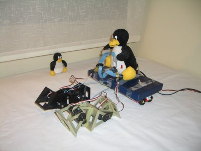

Hoy mientras frikeaba con JDE, he encontrado una nueva aplicación de los robots modulares: son perfectos para tirar de un carro 😀
Pero mejor verlo en un vídeo:

El carro lo he improvisado con una tapa de una caja y un par de coches de mi padawan, que hacen las veces de ruedas. Dos robot del tipo Minicube-I tiran del carro, haciendo avanzar a tux, al ritmo de la música de Ben-Hur🙂
Uno de los Minicubes está hecho con módulos Y1 y el otro con Módulos GZ.
¡El primer vehículo con dos gusanos de potencia ha sido creado!!!